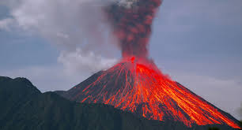

The Story
A volcanic eruption is one of the most primal and awe-inspiring displays of Earth's internal power. It is the discharge of molten rock, blinding ash, and various toxic gases from a deep fissure or vent—a crucial, violent release valve for the immense heat and pressure churning just beneath the thin crust we call home.
The story of a volcano begins miles underground in the Earth's mantle, where extreme temperatures melt solid rock into a thick, glowing fluid known as magma. Because this magma is lighter than the solid rock surrounding it, it slowly rises, gathering in massive subterranean chambers. As it ascends, trapped gases like water vapor, carbon dioxide, and sulfur dioxide expand, building up an unimaginable amount of pressure beneath the surface.
How a volcano erupts depends entirely on the chemical makeup of its magma. If the magma is thin and runny, the trapped gases can easily escape, resulting in an "effusive" eruption where red-hot rivers of lava calmly flow down the mountainside, continuously paving new land. However, if the magma is thick and sticky, the gases cannot escape. The pressure builds and builds until the rock finally shatters in a catastrophic "explosive" eruption. These blasts can tear a mountain apart, sending pyroclastic flows—avalanches of superheated gas and rock—racing down the slopes at hundreds of miles per hour and launching columns of ash high into the stratosphere.
While an eruption is undeniably destructive, obliterating forests and burying cities in moments, it is fundamentally an act of creation. Volcanoes are the ultimate architects of our world. They forged the early atmosphere by releasing essential gases, they birthed entire island chains from the ocean floor, and their cooled ash breaks down into some of the most nutrient-rich, fertile agricultural soils on the planet. To understand a volcano is to understand that the Earth is actively remaking itself from the inside out.

Philosophical Questions
Is destruction a necessary prerequisite for creation?
When a volcano erupts, the immediate aftermath looks like a sterile, burning wasteland. Yet, just a few years later, that same ash-covered ground often blooms into lush, incredibly vibrant ecosystems because of the deep-earth minerals deposited there.
This natural cycle challenges our human perception of tragedy. It suggests that in the grand mechanics of the universe, destruction and creation are not opposites, but two halves of the exact same process. It forces us to ask if absolute ruin is sometimes the only way to build a truly fertile foundation for the future.
Does the Earth actually breathe?
We tend to think of biology—plants and animals—as the only things that "breathe" on this planet. But volcanoes continuously exhale massive amounts of carbon dioxide and water vapor from the planet's interior into the atmosphere, which plants then use to grow.
This paints a deeply profound picture of Earth not as a dead rock, but as a massive, geological super-organism with its own slow, fiery respiratory system. It implies that human breath and volcanic eruptions are ultimately part of the same interconnected planetary rhythm.
Are we living under an illusion of permanence?
Millions of people live in the shadows of dormant volcanoes, building generation after generation of history on slopes that could theoretically vanish in an afternoon. We categorize a mountain as a permanent, unchanging landmark.
An eruption shatters this illusion, reminding us that geology is not history—it is an active, ongoing event. It raises a humbling philosophical point: we do not own the land we build on; we are merely leasing it during a brief, quiet pause in the planet's violent geological schedule.